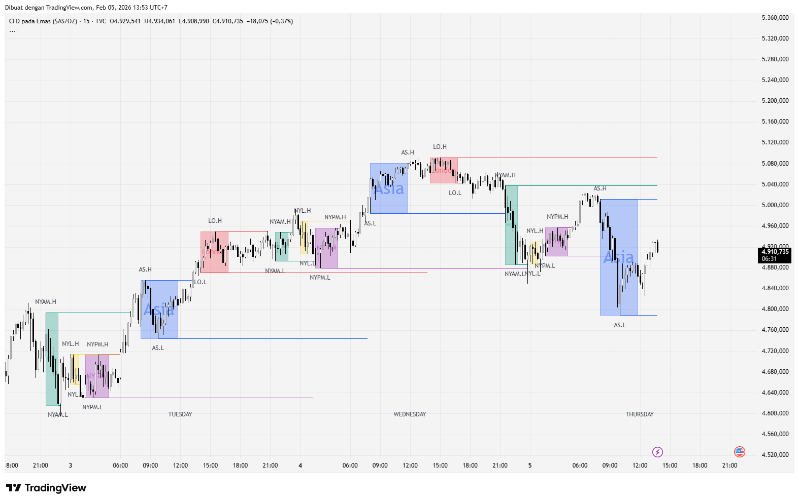
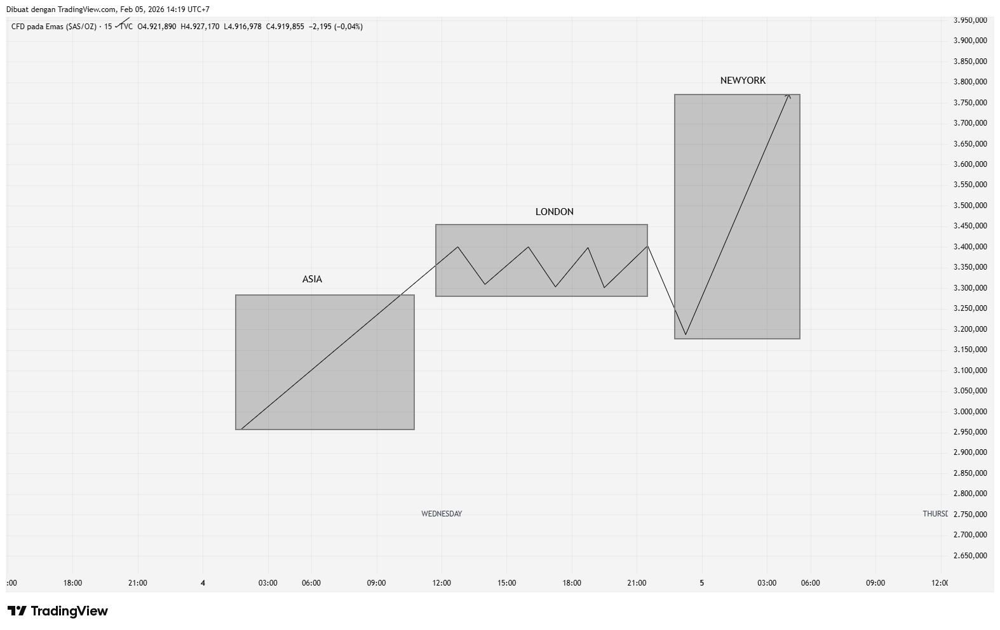
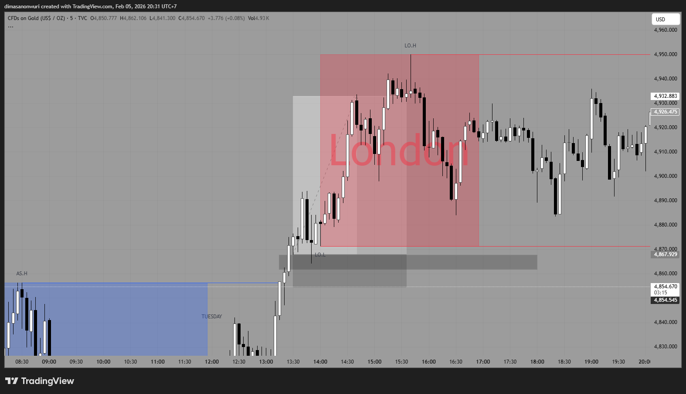

Pengenalan Basic Dari Trading
Pertama kali trading? coba pahami dahulu apa itu AMD killzone
AMD killzone merupakan sebuah teori jam waktu trading,ada sesi asia,sesi london,dan sesi amerika
dijam 06.00-13.00 WIB merupakan sesi asia,dijam 14.00-21.00 WIB merupakan sesi london,dan dijam 21.30-05.00 WIB merupakan sesi amerika/ny
lalu,kenapa ini berpengaruh?
Karena dijam sesi asia biasa terjadi price discoevery dan spot buyer bank central(XAU)
Sementara pada saat sesi london merupakan sesi konsolidasi dan banyak trap untuk liquidity harvesting
Dan saat sesi amerika/ny banyak institusi dengan volume besar masuk dan dapat terjadi pembalikan arah atau continuation

Bagaimanakah cara menggunakannya? pertama marking high dan low pada setiap sesi seperti gambar diatas
atau gunakan indikator ict killzone agar secara otomatis memberi tanda
Lalu lihat pada price action,pada sesi london konsolidasi,maka sesi amerika akan sweep low dari asia prev
kenapa sweep low? karena low/high sebuah range candle pasti banyak liquidity yang menumpuk
apa itu liquidity? liquidity merupakan sekumpulan pending order buy/sell

